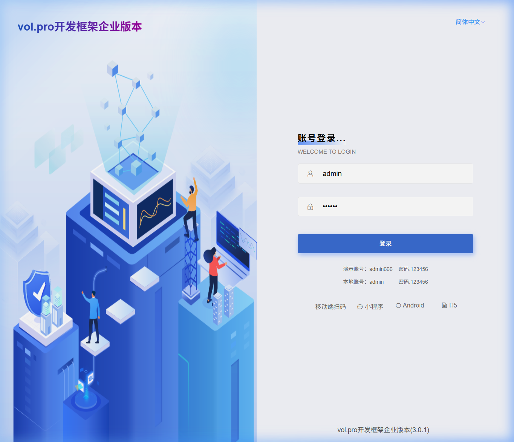
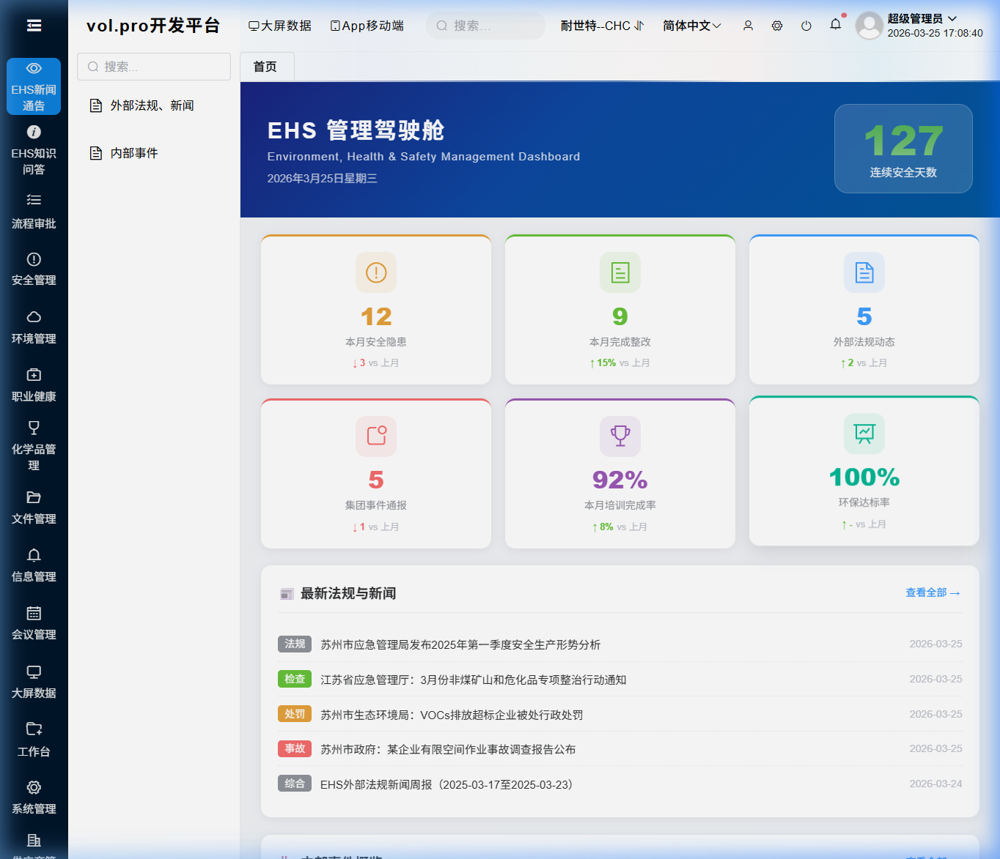
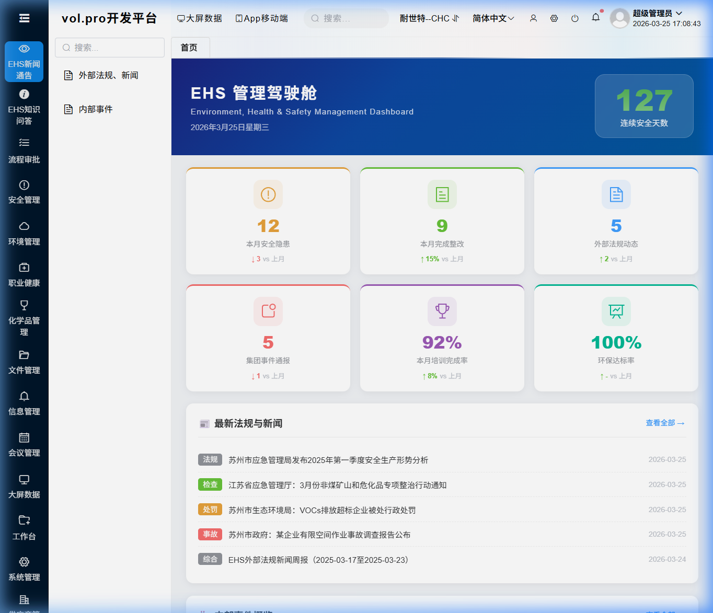
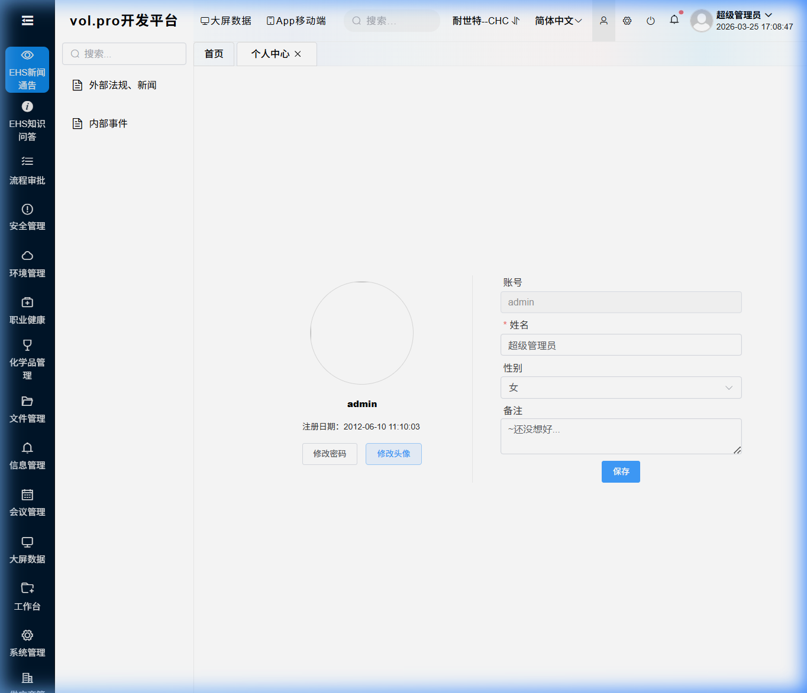
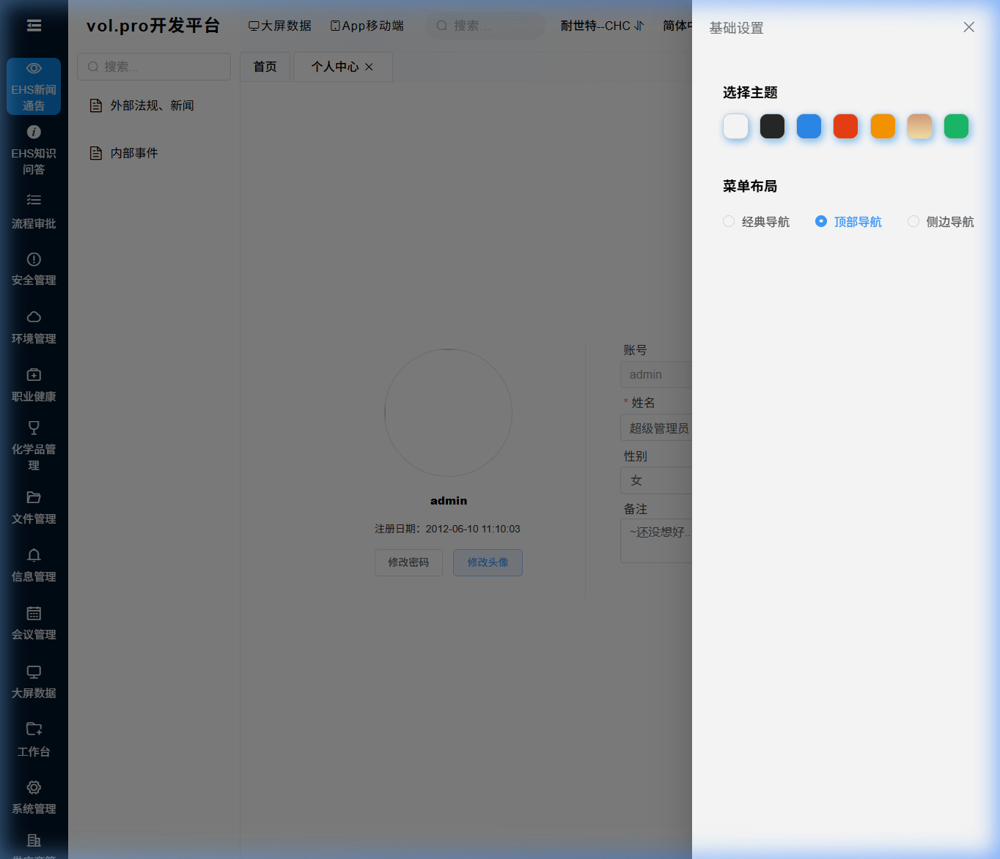
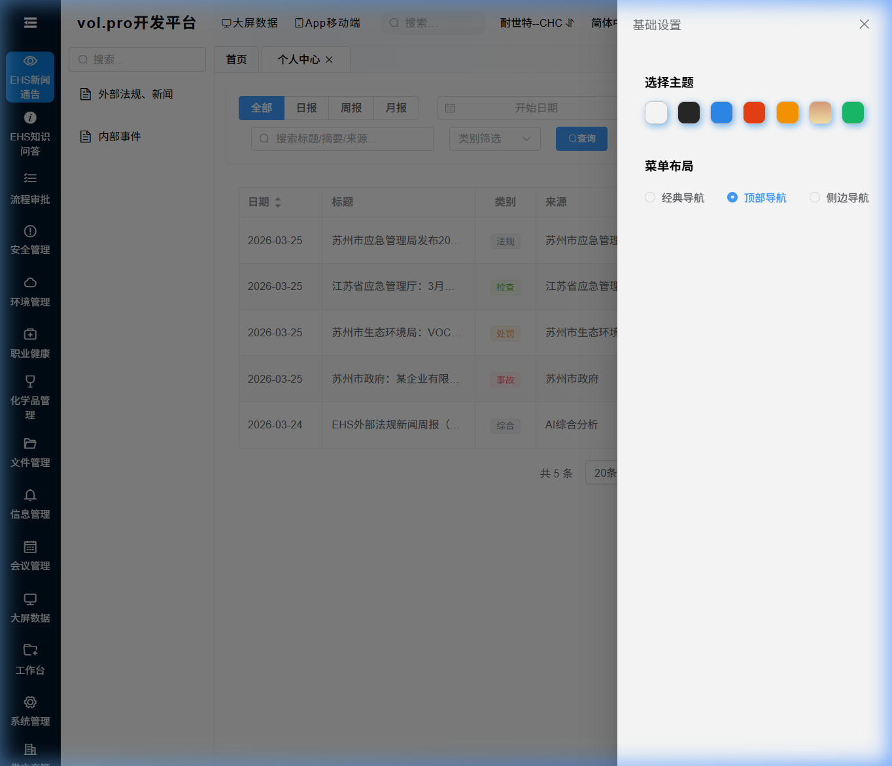
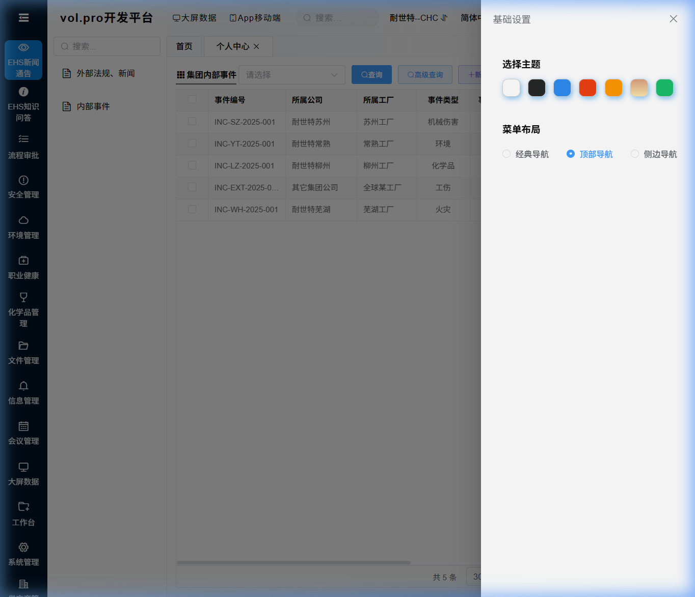
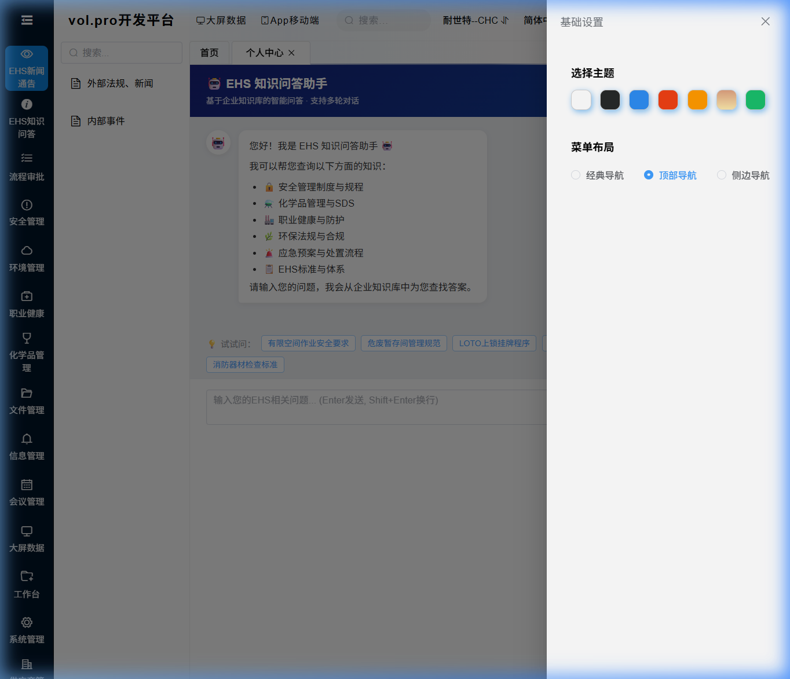

版本: V1.0 更新日期: 2026年3月25日 适用角色: 全体EHS用户
EHS管理系统（Environment, Health & Safety）是基于 VOL Pro 平台构建的企业级环境、健康与安全管理系统。本系统帮助您：
在浏览器地址栏输入系统地址打开登录页面：

| 步骤 | 操作 |
|---|---|
| ① | 在 用户名 输入框中输入您的账号（例如：admin） |
| ② | 在 密码 输入框中输入您的密码 |
| ③ | 点击 登 录 按钮 |
| 问题 | 解决方法 |
|---|---|
| 提示"用户名或密码错误" | 检查大小写，确认账号正确 |
| 页面空白或无法打开 | 检查网络连接，确认系统地址正确 |
| 忘记密码 | 联系系统管理员重置密码 |
登录成功后，系统自动进入 EHS管理驾驶舱 主页：

| 区域 | 说明 |
|---|---|
| 连续安全天数（右上角绿色圆） | 显示当前工厂的连续无事故天数 |
| KPI指标卡片（中间6个彩色卡片） | 本月安全隐患数、应急预案数、外部法规数、重大事件数、培训完成率、安全目标达成率 |
| 最新法规与新闻（左下） | AI自动生成的最新EHS法规和行业新闻摘要 |
| 内部事件概览（右下） | 集团各工厂最近发生的安全事件列表 |
| 快捷导航（底部彩色卡片） | 一键快速进入常用模块 |
系统个性化设置位于页面 右上角 工具栏区域。
点击右上角的 工厂名称（如"耐世特-柳州 #"），系统会弹出工厂选择下拉列表：

| 步骤 | 操作 |
|---|---|
| ① | 点击右上角的 当前工厂名称 |
| ② | 在下拉列表中选择目标工厂 |
| ③ | 系统自动切换，页面数据更新为所选工厂 |
点击右上角的 语言选项（如"简体中文"），可切换系统界面语言：

目前支持的语言：
点击右上角的 设置图标 ⚙️，打开系统设置面板：

| 设置项 | 说明 |
|---|---|
| 导航模式 | 经典模式（左侧菜单）、顶部导航模式、侧栏导航模式 |
| 主题色 | 点击色块选择您喜欢的主题颜色（蓝色、绿色、紫色等） |
| 头部设置 | 可固定或隐藏顶部导航栏 |
| 步骤 | 操作 |
|---|---|
| ① | 点击页面右上角的 用户头像 或 用户名 |
| ② | 在弹出的下拉菜单中选择 "个人中心" 或 "修改密码" |
| ③ | 在弹窗中输入 旧密码 |
| ④ | 输入 新密码（建议8位以上，包含字母和数字） |
| ⑤ | 再次输入 确认新密码 |
| ⑥ | 点击 确定 保存 |
系统主要功能通过 左侧菜单栏 进入：
| 菜单分组 | 包含模块 |
|---|---|
| EHS新闻通讯 | 外部法规、新闻 / 内部事件 |
| EHS知识问答 | EHS知识问答-AI助理 |
| 流程审批 | 工作流、审批管理 |
| 安全管理 | 安全台账、隐患排查、事故管理 |
| 环境管理 | 废弃物管理、化学品管理 |
| 职业健康 | 培训管理、PPE管理 |
| 信息管理 | 文件管理、会议管理 |
左侧菜单顶部有 🔍 搜索框，输入关键词可快速查找菜单。例如输入"培训"，会自动筛选出含"培训"的菜单项。
点击左侧菜单 EHS新闻通讯 → 外部法规、新闻

本模块由 AI自动巡检并生成 最新EHS相关法规和新闻。系统每日自动扫描以下网站：
| 功能 | 操作方法 |
|---|---|
| 切换报告类型 | 点击顶部的 全部 / 日报 / 周报 / 月报 标签 |
| 按日期筛选 | 在"开始日期"和"结束日期"选择日期范围 |
| 按来源筛选 | 在"搜索标题/摘要/来源"输入框中输入关键词 |
| 按类别筛选 | 在"类别/频道"下拉框中选择（事故/处罚/法规/检查等） |
| 查询 | 点击蓝色 查询 按钮执行搜索 |
| 重置 | 点击 重置 按钮清空所有筛选条件 |
| 查看详情 | 点击列表中任意一行，弹出详情窗口查看完整内容 |
| 手动生成 | 点击右上角绿色 手动生成报告 按钮，可立即触发AI生成最新报告 |
| 列名 | 说明 |
|---|---|
| 日期 | 报告生成日期，可点击排序 |
| 标题 | 新闻/法规/报告的标题 |
| 类别 | 法规、事故、处罚、检查、预警、培训 |
| 来源 | 信息来源网站 |
| 摘要 | AI智能摘要（100字内） |
| 状态 | 成功/失败（失败表示AI生成时遇到问题） |
点击左侧菜单 EHS新闻通讯 → 内部事件

本模块用于记录和跟踪集团内部各工厂发生的EHS安全事件，包括事故、未遂事件、安全隐患等。
| 功能 | 操作方法 |
|---|---|
| 查询事件 | 在顶部搜索区域输入筛选条件，点击 查询(Search) |
| 新增事件 | 点击工具栏 新建(Add) 按钮，填写事件信息后保存 |
| 编辑事件 | 选中一行，点击 编辑(Update) 按钮 |
| 删除事件 | 选中一行，点击 删除(Delete) 按钮 |
| 导出Excel | 点击 导出(Export) 按钮，下载当前筛选结果 |
| 字段 | 说明 |
|---|---|
| 事件编号 | 系统自动生成的唯一编号 |
| 所属公司 | 事件发生的公司名称 |
| 所属工厂 | 事件发生的具体工厂 |
| 事件类型 | 工伤事故 / 未遂事件 / 环境事件 / 财产损失 |
| 事件等级 | 一般 / 较大 / 重大 / 特别重大 |
| 事件标题 | 事件的简要描述 |
| 发生日期 | 事件发生的日期 |
| 发生地点 | 事件发生的具体位置 |
| 受伤人数 / 死亡人数 | 人员伤亡统计 |
| 经济损失 | 预估经济损失金额 |
| 状态 | 待处理 / 处理中 / 已关闭 |
点击左侧菜单 EHS知识问答 → EHS知识问答-AI助理

这是一个基于企业知识库的 AI智能问答助手，可以帮助您快速查询EHS相关的专业知识，包括：
| 功能 | 操作方法 |
|---|---|
| 提问 | 在底部输入框中输入问题，按 Enter 键或点击 发送 按钮 |
| 换行 | 按 Shift + Enter 在输入框内换行（不会发送） |
| 连续追问 | 直接输入后续问题，AI会记住上下文自动关联 |
| 快捷问题 | 首次进入页面时，点击底部的 💡 快捷标签即可快速提问 |
| 新会话 | 点击右上角 新会话 按钮，清除历史上下文重新开始 |
| 测试连接 | 点击右上角 测试连接 按钮，检查知识库服务是否正常 |
AI的回答下方可能会显示 📚 参考来源 区域，包含：
系统中大部分数据页面都使用统一的表格组件，以下技巧适用于所有表格页面：
| 操作 | 方法 |
|---|---|
| 排序 | 点击表头列名，可按该列升序/降序排列 |
| 调整列宽 | 将鼠标移到表头列分隔线，拖拽可调整列宽 |
| 翻页 | 使用表格底部的分页控件翻页 |
| 每页条数 | 在分页控件中选择每页显示的记录数（20/50/100） |
| 全选/取消 | 点击表头的复选框可全选/取消当前页所有记录 |
| 按钮 | 功能 | 说明 |
|---|---|---|
| 查询(Search) | 按条件搜索数据 | 🔍 输入筛选条件后点击 |
| 新建(Add) | 新增一条记录 | ➕ 弹出表单填写信息 |
| 删除(Delete) | 删除选中的记录 | 🗑️ 需先勾选要删除的行 |
| 编辑(Update) | 编辑选中的记录 | ✏️ 需先勾选要编辑的行 |
| 导入(Import) | 从Excel批量导入数据 | 📥 选择本地Excel文件 |
| 导出(Export) | 将数据导出为Excel文件 | 📤 自动下载到本地 |
A：请检查网络连接，建议使用 Chrome 或 Edge 浏览器。清除浏览器缓存（Ctrl+Shift+Delete）后重试。
A：按 Ctrl+Shift+R 强制刷新页面。若仍有问题，清除浏览器缓存后重新登录。
A：导出的文件默认是UTF-8编码。在Excel中打开时，选择"数据" → "从文本/CSV" → 选择"UTF-8"编码。
A：点击右上角"测试连接"按钮，确认网络是否通畅。如持续失败，请联系IT管理员检查知识库服务状态。
A：点击页面右上角的用户头像，选择 "退出登录" 即可安全退出。
A：不同角色拥有不同的操作权限。如需更多权限，请联系系统管理员在"角色管理"中为您分配。
技术支持：如遇到本手册未覆盖的问题，请联系EHS系统管理员或IT支持团队。